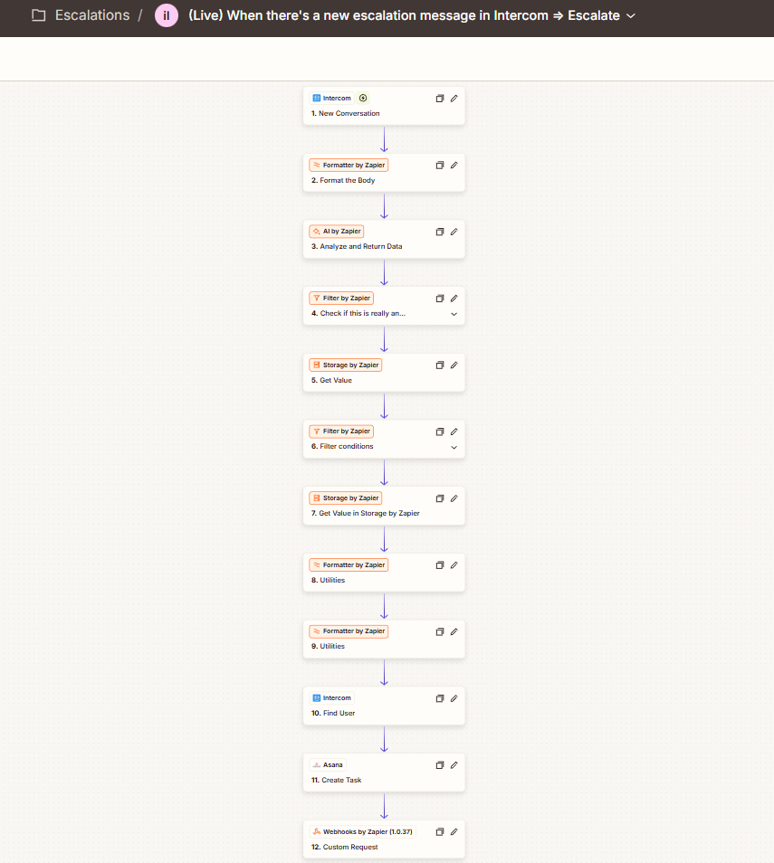

AI escalation detector
It checks incoming support conversations for escalations and flags them to Asana and Google Chat. It sorts them into six kinds: cancellation, refund, downgrade, complaint, legal threat and other.
The problem
Someone had to read support conversations by eye to spot cancellations, refund requests, complaints and other urgent issues. Doing that by eye is slow. It is also easy to miss one.
Version 1: two Zaps
I built the first version in Zapier in October 2025. Each new conversation and each customer reply went to Gemini 2.5 Flash Lite through AI by Zapier. Zapier Storage stopped the same conversation from alerting twice. An escalation created an Asana task and posted a card to Google Chat.
The prompt was the hard part. I wrote it as a set of named rules: 16 rules for what is not an escalation (F1 to F16) and 7 for what is (R1 to R7). Every change got a new version number, so I could tell which rule caused which result.

What I built
I wanted every prompt change tested against labelled conversations before it shipped. So I wrote a spec in May 2026 and rebuilt the detector as a Python service on Google Cloud Run. It ran in shadow mode first, making verdicts without sending any alerts. It went live on 25 June 2026.
Most of the work went into the tools around the classifier, so it could be changed safely:
- An offline eval harness with labelled datasets. Every prompt version from v19 on was scored against them.
- A false-positive backtest that re-runs a new prompt against past false alarms.
- A 45-conversation replay check before each deploy.
- A prompt playground behind Identity-Aware Proxy, so a prompt can be tried by hand.
- A budget alert handler, so the cost cannot creep up unseen.
After go-live I kept adding to it: a race-safe claim so two events never make two tasks, key-account flags, @-mentions for the assignee, a change-of-ownership path, a review tier for borderline cases, and a second check before anything is called a cancellation. It also spots urgent phone calls, alerts a responder and starts a no-reply timer. I benchmarked Gemini 2.5 Flash and Pro against Claude Haiku 4.5 along the way.
How it works
Receive
Intercom sends a webhook for each new conversation and each customer reply. The service checks the HMAC signature before it does anything else.
Claim
A Firestore record claims the conversation. A retry or a second event cannot create a second task. The record then follows the Asana task through its life.
Classify
Gemini on Vertex AI reads the conversation with the current prompt and returns a verdict. An escalation gets one of six kinds: cancellation, refund, downgrade, complaint, legal threat or other. Calls back off and retry when the API is busy.
Alert
An escalation creates an Asana task, mentions the assignee and posts a card to Google Chat. Key accounts are flagged.
Test the next change
A new prompt runs through the eval harness, the backtest and the replay check before it replaces the live one.
What changed
The clearest single result was the step from prompt v18 to v19, measured in eval.
Before · prompt v18
7/10false positives dropped in eval. 9 of 12 real escalations kept.
After · prompt v19
10/10false positives dropped in eval. 10 of 12 real escalations kept.
The test suite grew from about 200 tests in June and July 2026 to 988. The service handles about 62 AI verdicts a week, and the model calls cost a few dollars a month.
The bigger change is how it gets improved. Each prompt is a numbered version with a score, and a new one ships only after it passes the checks.
Eval figures come from offline runs on labelled conversations, not from live traffic.